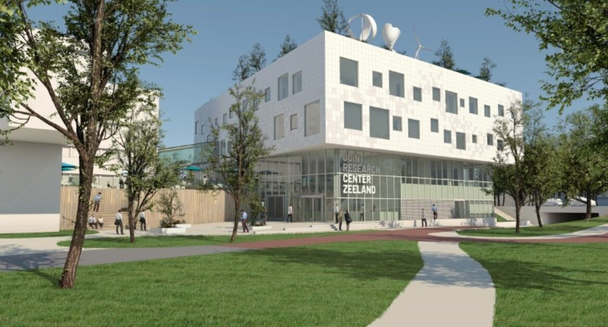

<!DOCTYPE html>
<html lang="English"></html>
    <head>
        <meta charset="utf-8">
        <meta name="viewport" content="width=device-width, initial-scale=1.0"> <!--Rework this after asking-->
        <title>Home</title>
        <link rel="stylesheet" href="css/stylesheet.css"> 
        <link rel="stylesheet" href="css/menus.css">
    </head>
    <body>
        <div id="container">
            <header>
                <h1>Home</h1> 
            </header>
            <nav>
                 <ul>
                    <li><a href="index.html" class="active">Home</a></li>
                    <li><a href="profile.html">My profile</a></li>
                    <li><a href="dashboard.html">Dashboard</a></li>
                    <li><a href="faq.html">Frequently asked questions</a></li>
                    <li><a href="blog.html">Blog</a></li>
                </ul>
            </nav>
            <main>
                <h2> Welcome to the homepage</h2>
                <hr>
                <p> On this website i will prove you that the HBO- ICT program at the HZ University of Applied 
                    Sciences is the best study program for me. Visit the HZ site <a href="https://hz.nl/en/" target="_blank">
                    here</a> or visit the iCT program page on the HZ site: <a href="https://hz.nl/en/study-programmes/it" 
                    target="_blank">here.</a><br/>There are multiple pages to explore: 
                </p>
                <ol>
                    <li>Home: the page you are currently on. Here you can read about my motivation and why this study is the best
                            choice for me. </li>
                    <li>Profile: on this page you can find some information about me.</li>
                    <li>Dashboard: here you can take a look at my progress in the NBSA boundary and all first-year exams.</li>
                    <li>FAQ: you can find the answer to some frequently asked questions on this page.</li>
                    <li>Blog: during the development of this website, i have written some posts, which you can access via this 
                            page. </li>
                </ol>
                
                
                
                <h3>My motivation</h3>
                <p> Since I was young I liked the apps and games on laptops, a ipad or a nintendo. Most of them were unique and 
                    very interesting. I have always been very creative, but I was not good at practical art skills, so the ideas 
                    I had never turned out as I imagined them. Later in high school I chose a subject related to ICT, where we learned 
                    the basics of a few programming languages, such as HTML & CSS, Python and SQL. I really liked this because it 
                    allowed me to take the ideas I created in my head and apply them to real projects using programming languages. 
                    This did not require any art skills and made me more confident to be creative. 
                </p>
                <p> All of these things combined created my motivation for this study: To be able to use my creativity and ideas 
                    to create great ICT projects which can serve a purpose for a company, the general public or a specific target 
                    audience. 
                </p>
                <h3>Why this is the best study for me</h3>
                <p> This program is the best choice for me. There are multiple reasons for this, which i have listed below.</p>
            </main>
            <aside>
                <h2>Relevant links</h2>
                <hr>
                <ul>
                    <li><a href="https://github.com/HZ-HBO-ICT" target="_blank"> HZ-HBO-ICT on Github</a></li>
                    <li><a href="https://glaze-donut-5a5.notion.site/Assignment-
                        Specification-661c5ac5d7494328a58be61d00dd41e4#bb3e11e764ef4f7ca866e2c2b2aa34a7" target="_blank">
                        Showcase Website assignment</a></li>
                    <li><a href="https://teams.microsoft.com/_?culture=nl-nl&country=nl#/school/conversations
                        /Algemeen?threadId=19:827654897ab746089c081f24aff1c984@thread.skype&ctx=channel" target="_blank"> 
                        HZ-HBO-ICT Teams</a></li>
                    <li><a href="resources/ir-hbo-ict-2023-2024.pdf" target="_blank">Implementation regulations HBO-ICT</a></li>
                    <li><a href="resources/cer-hbo-ict-2022-2023.pdf" target="_blank"> HZ Course and examination regulations</a></li>
                    <li><a href="https://hz.nl/en/secure/for-students/in-need-of-support/study-choice-and-study-progress" 
                        target="_blank"> Study-Progress</a></li>
                </ul>
            </aside>
            <footer>
                <p> Made by Meike | September 2023</p>
            </footer>
        </div>
    </body>
</html>